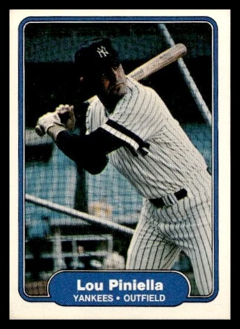

Lou Piniella "Sweet Lou"
Career Highlights & Facts
(Facts are AI-generated and may require verification)
- Earned a major league rookie award while playing for a first-year expansion club.
- Known for a legendary temper that led to multiple ejections as both a player and a manager.
- Successfully executed a famous defensive decoy play during a high-stakes tiebreaker game to prevent a runner from advancing.
Would you like to find out more about Lou Piniella?
Player Biography
Lou Piniella November 6, 2018 / in BioProject - Person Rookie of the Year 1970s All-Stars Managers 2001 Seattle Mariners , Time for Expansion Baseball / by admin This article was written by John DiFonzo Lou Piniella was a key member of the expansion franchise Kansas City Royals. Piniella earned the nicknamed “Sweet Lou” because of his sweet swing and (facetiously) his temper tantrums. As a member of the Yankees of the 1970s, Piniella was never the best player on a team of superstars, but he was always a fan favorite for his style of play, his clutch play, and his passion for the game. He was always greeted with a chorus of “Loooooou.” Though he had low walk and home-run totals, Piniella had a reputation as one of the game’s best pure hitters with a career batting average of .291. He was a student of the game and hitting. Though not the most gifted fielder, through hard work, Piniella proved to be a steady performer. Piniella learned the game from every manager he played for. “ Earl Weaver taught me some important lessons about winning when I played for him as a kid, and now Billy (Martin) taught me about team chemistry.” 1 Piniella transmitted his desire and will to win to his players. He turned three struggling franchises into contenders. He liked players who were like him, who had a fire in their bellies, cared deeply about the game and who could back it up. He took indifference and lack of emotion as not caring. He has been described by his players as tough but fair. “I hated to lose as a player,” Piniella said. “As a manager, I hate it even more.” 2 Piniella was named Manager of the Year three times, led seven teams to the postseason, winning one World Series, and won 1,835 games, 16th all-time. 3 Piniella had a quick temper that he inherited from his parents. His mother once came onto the basketball court in a high-school game to argue a call. His father fought his own catcher during a baseball game. When his mother was interviewed by a local newspaper and the reporter mentioned that Lou was a wonderful “fella” except for his temper, his mother responded, “Temper, what temper?” 4 Early on in his career, Piniella referred to himself as a “red ass,” a slang term meaning someone who is so intense in his or her competitive spirit that they are constantly on the verge of boiling over. As a player, he broke helmets and bats, damaged water coolers, and broke lights in the runway. As a manager, he kicked dirt and threw bases. His tantrums are legendary; they were sometimes used to motivate his players but sometimes embarrassed his family. He led the league in ejections three times as a player and three times as a manager. A Piniella childhood friend said, “Piniella would never be mad at you, he was always mad at himself. All the kids would tell you he would throw his glove, swing his bat. There are guys who are bullies and hotheads but he was just tough on himself, he never took it out on others. His teammates loved him.” 5 Piniella was a natural-born leader, as described by a childhood friend: “He had a magnetism. He was a down-to-earth guy, but certain people have that magnetism where they can get people to do things and energize people around him.” 6 Louis Victor Piniella (pronounced Peen-YAY-ah) was born on August 28, 1943, to Louis Piniella Sr. and Margaret (Magadan) Piniella in Tampa, Florida. Margaret’s parents, Marcelino and Benina, had emigrated from Spain and Spanish was spoken at home. Piniella was taught English by nuns in kindergarten. He grew up in a close-knit Spanish and Italian neighborhood where neighbors relied on each other and made lifelong friends. Both his parents were accomplished athletes. Margaret was tall and strong, was an All-State center from 1936 to 1939, and played softball on the boys’ team in grammar school and played volleyball. Louis Piniella was a star pitcher in the highly competitive semipro Intersocial League in West Tampa with his brothers-in-law Joe and Mac. Uncle Joe’s son and Lou’s first cousin is Dave Magadan . When Piniella was old enough, he served as the team’s batboy. The Piniella family were baseball fanatics, discussing every nuance of the game, and this included Margaret. Cigar making was a dominant industry in Tampa until the Cuban tobacco embargo in the 1960s. Piniella’s parents both worked in the industry. Margaret worked as a secretary for the Morgan Cigar Company. Lou Sr. was a salesman of cigars, cigarettes, candy, and household drugs. When he bought his own distributorship, Margaret went to work for him, handling the bookkeeping. Piniella demonstrated his athletic ability as young as 3 years old; he would hit tennis balls with a bat made from a broomstick and his mother would marvel at how hard he hit them. At age 13 in 1956, Piniella suffered a broken ankle hiking in California while representing West Tampa in the Pony League national baseball championship. Piniella played basketball – some say his it was first love and the sport in which he had the greatest talent; he was an All-American in high school. He held the single-game Tampa scoring record – 54 points – for nearly 40 years. Piniella was so good that opposing teams would foul him and try to provoke his temper into retaliation, perhaps to get thrown out of the game. His mother would not allow him to play contact football because her brother Joe lost a kidney while playing football in college. One of Piniella’s early influences was Jesuit High School basketball coach Paul Straub. Straub was a World War II veteran who had lost both his legs and had his right hand permanently disabled. Straub noticed Piniella’s talent, saying, “He was one of the best athletes to come out of Tampa. I really wanted to make him a quarterback, but his mother wouldn’t let him play.” 7 Piniella said of Straub, “In sports, the will to win, to compete, it all starts early in life. And he was tough on me, which was good because I had a hot temper. He started to try to change that process.” 8 In Piniella’s senior year he did not play baseball for Jesuit High School because of a dispute he had with the baseball coach on how he was being used as a pitcher. Piniella was not drafted and he went to the University of Tampa on a basketball scholarship. His basketball career was cut short when he reinjured his ankle jumping off a roof while avoiding police who were looking for underage drinkers. Piniella had a solid freshman year in baseball and was signed by the Cleveland Indians on June 9, 1962, for a $25,000 bonus. He started his professional career playing for the Class-D Selma Cloverleafs of the Alabama-Florida League. Piniella started out poorly. His manager, former major-leaguer Pinky May , suggested that he worry about the fastball first and pull the ball. Piniella broke out of his slump and ended the season batting .270 with 8 home runs and 44 RBIs. After the season Piniella was grabbed by the Washington Senators in the first-year draft . In 1963, he played for the Peninsula Senators of Hampton, Virginia, in the Class-A Carolina League, batting .310 with 77 RBIs and clubbing 16 home runs. During the 1964 season, Piniella served in the National Guard at the beginning of the year and did not play for the Senators. He was traded to the Baltimore Orioles on August 4. He was assigned to the Aberdeen (South Dakota) Pheasants of the Class-A Northern League. Piniella was managed by Cal Ripken Sr . and among his teammates were future major leaguers Jim Palmer and Mark Belanger . The manager’s 4-year-old son, Cal Ripken Jr ., was the team’s batboy. Piniella also played for the Orioles’ Florida Instruction League team and got a September call-up. In his only plate appearance, he pinch-hit for Robin Roberts and grounded out Roberts told him, “Young man, I could have done that.” 9 In 1965 Piniella was promoted to the Elmira Pioneers of the Double-A Eastern League, managed by Earl Weaver . Piniella said that Weaver was “the first manager who really intimidated me.” 10 But he said Weaver was a great manager who instilled in him a passion for winning. Although they feuded in the majors, Weaver said of Piniella, “He was my kind of ballplayer, he got the job done. You can count on him to play every day, and you could count on him in the clutch, especially in the clutch.” 11 The following season, 1966, the Indians reacquired Piniella and promoted him to the Triple-A Portland Beavers. Piniella slumped early in the season, but finished the season batting .289 with 7 home runs and 52 RBIs. In the offseason he met Anita Garcia, a college student majoring in art and education, who had been Miss Tampa in 1962. It was a quick courtship and the couple married in the spring of 1968; they raised three children, Lou Jr., Kristi, and Derek. In 1967, Piniella spent another season at Portland, batting .308. He spent a third season with Portland in 1968, again with improved stats (.317 and 62 RBIs) and this time got a September call-up. He played in six games for the 1968 Indians, but did not get a hit. At the end of the 1968 season, Piniella had spent seven years in the minors and was 25 years old. In 1969 he was chosen by the Seattle Pilots in the expansion draft and felt this would be his last chance. That year there was talk of a players’ strike. Jim Bouton was on the team and Piniella told Bouton he would stand behind the players. “That impressed the hell out of me,” Bouton wrote in Ball Four . “Here’s a kid with a lot more at stake than I, a kid risking a once-in a-lifetime shot. And suddenly I felt a moral obligation to the players. I decided not to go down.” 12 During spring training Piniella was dealt to another expansion team, the Kansas City Royals. On Opening Day, April 8, 1969, at Kansas City’s Municipal Stadium, Piniella led off the bottom of the first with a double to left. This was the first hit of his major-league career and both the first at-bat and base hit for the Royals. When Jerry Adair singled to left, Piniella scored the franchise’s first run. Piniella hit safely the next three times to start the season with four hits in a row, 4-for-5 for the game. The next game he drove in the winning run in the 17th inning. Piniella credited manager Joe Gordon with helping him become a better hitter and being more selective. Piniella batted .282 and was named the American League Rookie of the Year, the first player to win the award playing with an expansion team in its inaugural season. In 1970 Piniella missed 24 games with a foot injury, but he adjusted to the abundance of sliders he was getting and improved his average to .301, tied for eighth in the American League, and had a career-high 88 RBIs. In 1971 Piniella injured his thumb and missed 30 games, but came back to hit .304 in the second half of the season to raise his average to .279. Always the student of hitting, after the 1971 season Piniella played six weeks of winter ball in Venezuela and was coached by Charlie Lau . Lau had Piniella crouch more and abandon his stiff “telephone booth” stance. Piniella said it helped him see outside pitches and breaking balls better. It seemed to work in 1972: On June 8 he was leading the American League in hits and batting .341, and by midseason was named to his only All-Star Game. Piniella led the league in doubles (33) and was second in batting average (.312), only 6 points behind Rod Carew . In 1973 Piniella had a down year at the plate, batting only .250. He made a bad impression with new manager Jack McKeon when he arrived late and out of shape for spring training. Piniella was also unhappy with his contract and lost his outfield job to Jim Wohlford , a McKeon favorite. Now expendable, Piniella was traded with pitcher Ken Wright to the New York Yankees for Lindy McDaniel . Piniella had a solid first year with the Yankees in 1975 and led the team in batting (.305), slugging (.407), and doubles (26). The following season he punctured his eardrum while bodysurfing in Puerto Rico during spring training. He had an inner-ear infection, suffered from dizziness and headaches, and was limited to 74 games and a career-low .196 batting average. He received a 20 percent pay cut the next season. In 1976 Yankees manager Billy Martin employed a more aggressive style, which suited Piniella. In a game against their arch-rival Boston Red Sox on May 20 , Piniella collided with catcher Carlton Fisk at home plate in an attempt to dislodge the ball, which touched off a benches-clearing brawl. Piniella badly bruised his right hand in the fight and later reinjured it punching a wall after making an out. That season he platooned with Roy White as DH but was limited to 100 games and batted .281. The Yankees won the American League East and defeated the Kansas City Royals in the ALCS on Chris Chambliss ’s dramatic Game Five walk-off home run. The Cincinnati Reds swept the Yankees in the World Series. In 1977 the Yankees added veteran Jimmy Wynn to be the team’s DH. Piniella was retained as an insurance policy in case Wynn didn’t work out, and he requested a trade. When Wynn was released, Piniella made the most of the opportunity and hit .330, a career best. The Yankees clubhouse was divided into three cliques, headed by Reggie Jackson , Martin, and Thurman Munson . Piniella skillfully managed to get along with all groups. Adding to the tension was team owner George Steinbrenner , who would criticize the manager in public and would often make his own lineup requests. This era of Yankee teams would be dubbed “The Bronx Zoo” by the media. Tensions boiled over on June 18, 1977, in a nationally televised game. Martin removed Jackson in the middle of an inning, feeling Jackson had loafed on a double by Jim Rice . Martin and Jackson argued in the dugout and had to be separated. Jackson asked for advice from Piniella. Jackson felt that Martin had humiliated him. Piniella advised him to go to the hotel and to not fight Martin. In midseason Munson and Piniella met with Steinbrenner and told the owner that the situation on the club was intolerable, that Steinbrenner should stop ripping Martin in the papers, let him manage as he saw fit, and let Jackson bat cleanup. Soon after, Jackson was moved to the cleanup spot and the Yankees went on a winning streak and won the AL East. They met the Royals in the ALCS. Down two games to one, facing elimination in Kansas City, the players were told to leave their bags in the lobby in case they lost. Piniella objected to the implied defeatism and Steinbrenner agreed. The Yankees won the next two games in Kansas City to win the pennant. Piniella batted .333 in the series. The Yankees faced the Los Angeles Dodgers in the World Series. With the Yankees leading, two games to one, in Game Four in Los Angeles, Piniella drove in a run and robbed Ron Cey of a home run that would have tied the game. The Yankees won in six games, punctuated by Reggie Jackson’s three home runs in the finale. Piniella was relieved, “I don’t think this club could take another week of this,” he said. 13 On July 19, 1978, the Yankees were in fourth place, 14 games behind the Red Sox. The clubhouse infighting got so bad that Piniella complained to the press that he did not want to be there. On July 24 Martin resigned and the tensions subsided. Around this time, Piniella stood up in the clubhouse and said, “Play like we know we can and we’ll catch the Red Sox or be awfully close.” 14 Piniella had one of his best seasons, batting .314, playing in 130 games at the age of 34. The Yankees staged one of the greatest comebacks in history and tied the Red Sox for the American League East title to force a one-game tiebreaker at Fenway Park. In a classic game, the Yankees led, 5-4, in the bottom of ninth inning. By this time, the sun was setting and impairing Piniella’s vision in right field. Goose Gossage walked Rick Burleson with one out. Jerry Remy hit a line drive right at Piniella. “I saw the ball leave the bat,” he said, “and that was the last time I saw it. I knew if the ball got by me, the runner would go to third or maybe score the tying run. I couldn’t allow Burleson see that I had lost it in the sun. I kept my composure as I searched for the ball backtracking as hard as I could. I wanted to give myself more room to find it. Out of the corner of my eye, I saw the ball landing a few feet to my left on the grass.” 15 Piniella’s decoy prevented Burleson from reaching third. The next batter, Jim Rice, hit a drive to deep right that probably would have scored Burleson from third. Carl Yastrzemski popped out and the Yankees won the AL East. Piniella pointed to another defensive play in the sixth inning with the Red Sox up, 2-0. Fred Lynn was up with runners on first and second. The count was 3-and-2. Piniella figured that Ron Guidry did not have his best stuff and Lynn was a dead pull hitter, so he moved 15 feet to his left. On the next pitch Lynn hit a deep fly ball to the right-field corner where the perfectly positioned Piniella was waiting for it to end the inning. The Yankees went on to beat the Royals three games to one in the League Championship Series. They met the Los Angeles Dodgers again in the World Series. In Game Four, with two outs in the bottom of the 10th, Piniella singled home the winning run to tie the Series at two games apiece. The Yankees won the next two games and repeated as champions. Tragedy struck the Yankees in 1979 when Thurman Munson died in an airplane accident. Piniella gave a eulogy at his friend’s funeral. In 1981 the Yankees again faced the Dodgers in the World Series; this time the Dodgers prevailed in six games. Piniella batted .438 in his last World Series, but he would blame himself for the loss because in his first at-bat in Game Three, with two runners on in the first inning, he pulled the ball and hit into a double play instead of going to the opposite field. In August 1982, 16 Piniella became a part-time player and was named the Yankees’ batting coach. In June 1984, battling a torn rotator cuff, the 40-year-old Piniella retired. The news broke in Boston, where the Yankees were playing the Red Sox. When it was flashed on the scoreboard, Piniella received a standing ovation. His last game was on June 16 at Yankee Stadium. August 5 was Lou Piniella Day at the ballpark. He was presented with many gifts, including a bashed-in water cooler and two replacement fluorescent light tubes to symbolize the many he had broken in the tunnel at Yankee Stadium. Piniella remained with the club as first-base coach and hitting instructor. George Steinbrenner signed his management team to personal services contracts so he could fire and bring them back in various capacities, and Piniella was no exception. Steinbrenner made him the manager in 1986. He promised Piniella that he would not meddle in his decisions, but that did not last. After two seasons as manager, Piniella became GM, chief evaluator of talent, manager again, then spent a year in the broadcast booth. Steinbrenner offered Piniella the manager’s job for a third time but Piniella turned it down. He was interested in several American League jobs, but Steinbrenner blocked the moves by demanding compensation. Steinbrenner let Piniella out of his personal-services contract without compensation to manage the Cincinnati Reds. Piniella effectively replaced Pete Rose after the gambling scandal. The Reds had some good young talent and Piniella felt they could win in 1990. Piniella surrounded himself with veteran NL coaches to help him make the league transition. The Reds led the National League West wire-to-wire for the first time in National League history. After defeating the Pittsburgh Pirates in the NLCS, the Reds met the heavily favored 103-win Oakland A’s in the World Series. The A’s were managed by childhood friend and Tampa native Tony La Russa . The Reds upset the A’s. They started out fast in Game One with Eric Davis ’s two-run home run in the first inning and won easily, 7-0. In Game Two they scored the winning run off Dennis Eckersley in the bottom of the 10th inning, prevailing, 5-4. In Game Four, Piniella trusted his gut and made all the right moves. The A’s led 1-0 late in the game, Piniella kept the bunt sign on with two strikes, and Herm Winningham delivered a single. The Reds eventually scored two runs to take the lead. In the bottom of the ninth, with his ace, José Rijo , working on a two-hitter, Piniella replaced him with Randy Myers , who got the final two outs to win the Series. Piniella was credited for getting the Reds over the top by the sheer force of his personality, his unwillingness to let up on his players, and his passion for winning. 17 While the Boss [Steinbrenner] was hosting Saturday Night Live , Piniella was addressing the media. He felt he had proved to himself that he could win when given a chance. “I was a little bitter when I left (New York),” he said. “I carried a grudge for a while because of what happened. I knew I could do the job if I was afforded the chance to do it on fair terms. They let me do it here. In New York, we had a team in position every year I managed but there were always problems that were the fault of the players or the manager. When things got tough this summer, I got calls from the owner saying, ‘Keep your chin up, you’re in first place. Everything will be all right.’ I’m not accustomed to those types of calls.” 18 Piniella added, “To win this thing is a great feeling. It’s much more meaningful to me as a manager than as a player. You’re more involved, more responsible. It’s the total picture. You got to make decisions. Because of the hard work and responsibility, you appreciate it more.” 19 In 1991 the injury-plagued Reds regressed. They won 90 games in 1992 but finished in second place. Piniella wrestled Rob Dibble in the locker room when Dibble disagreed with the manager’s assessment of his shoulder in a postgame interview. The whole incident happened in front of reporters and the camera. Dibble apologized and Piniella forgave him. The next night Dibble saved the game and Piniella came onto the field, threw some fake punches at Dibble, and then gave him a big hug. The crowd went wild. When Piniella’s contract was up in 1993, he did not want to return. Piniella had been sued by umpire Gary Darling in 1991 after accusing Darling of bias. Piniella felt that he did not get support from the organization, either publicly or behind the scenes. He had not been offered a contract for 1993 and owner Marge Schott was talking about cutting payroll. The Seattle Mariners wanted Piniella, but he had concerns about the position. He had had financial problems from bad investments and needed the income. Piniella agreed to manage the Mariners and negotiated an unlimited travel budget for his wife. The Mariners were 64-98 in 1992, the worst record in the American League, but had a nucleus of good young talent. Piniella said, “Winning is an attitude just like losing is. We plan on bringing in a winning attitude and have it permeate the clubhouse.” 20 In 1993 the Mariners finished 82-80, their second winning season in franchise history. In 1995 the Mariners overcame a 13-game deficit on August 2 to tie the California Angels and force a one game tiebreaker. (This was the third in AL history and Piniella participated in two of them.) The Mariners won, 9-1, behind the pitching of Randy Johnson . In the best-of-five Division Series, the Yankees jumped out to a commanding 2-0 lead in games. Piniella remained positive and declared, “We are going to win this thing.” The Mariners won the next two games, setting up the deciding game in the Kingdome. The Yankees took a 5-4 lead in the top of the 11th inning, but the Mariners won on a walk-off two-run double by Edgar Martinez in the bottom of the inning. Ken Griffey Jr . slid into home plate to score the winning run. The Mariners lost the ALCS to the Cleveland Indians, four games to two; Cleveland had swept the Red Sox in their previous series and their pitchers were well rested. The Mariners remained competitive the next five years, winning the AL West in 1997 and the wild card in 2000. They lost core talent including Álex Rodríguez , Randy Johnson, and Ken Griffey Jr., but in 2001, they signed Ichiro Suzuki as a free agent from Japan and employed a small-ball offense. The Mariners won an AL record 116 games, topping the 1998 New York Yankees (114) and tying the major-league mark set by the 1906 Chicago Cubs. 21 The Mariners defeated the Cleveland Indians in the Division Series but lost to the Yankees in the ALCS, four games to one. Although the Mariners won 93 games in 2002, they finished third in the AL West and Piniella needed a change. He was under contract and the Mariners wanted compensation if he departed. Eventually the Mariners worked out a trade of Piniella to the Tampa Bay Devil Rays for Randy Winn . Piniella went to Tampa in part to be close to his family. His father was in ill health and his daughter was going through a divorce. The club also promised to increase payroll. Piniella’s pitching coach, Stan Williams , warned him that he would be jeopardizing his Hall of Fame managerial career. The team was below .500 in each of Piniella’s three years there, the first teams he managed that had sub-.500 records. Piniella hated losing and what made matters worse was that it was in his hometown. Piniella was frustrated that ownership did not increase payroll, and he and the club agreed to a $2.2 million buyout of the last year on his contract. Piniella took 2006 off from managing and became a broadcaster for Fox. In 2007 he became the manager of the Chicago Cubs, a team with the worst record in the National League, the second-worst-scoring offense and third-worst ERA. But GM Jim Hendry was impatient like Piniella and the Cubs were willing to spend on free agents. The team started out 22-29. They were described as an “overpriced, slapped together mess” in the media. 22 Piniella seemed to take the pressure off the team by getting himself ejected during the team’s sixth straight loss. Michael Barrett was traded shortly after a fight with Carlos Zambrano . But the team turned it around and won the division. They were swept by the Arizona Diamondbacks in the Division Series. In 2008 the Cubs finished with the best record in the National League, the first Cubs team to make back-to-back postseason appearances since 1908. In the Division Series they were swept by the Los Angeles Dodgers. The Cubs’ high-priced stars underperformed their contracts and the Cubs struggled in both 2009 and 2010. The 66-year-old Piniella had planned to retire at the end of the season, but his 90-year-old mother was ailing. August 22, 2010, was Piniella’s last game. He and Braves manager Bobby Cox exchanged lineup cards in a pregame meeting. It was Cox’s last game at Wrigley Field; he was retiring at the end of the season. The two shared an embrace. Piniella said, “I cried a little bit before the game. This will be the last time I put on a uniform.” 23 Piniella remained active in baseball as a consultant and broadcaster. In 2013, the Mariners even tried to coax him out of retirement at the age of 70, but he declined. Piniella was on the Hall of Fame ballot for 2017 for the veterans committee and received 43.8 percent of the vote. Last revised: February 1, 2026 SOURCES In addition to the sources cited in the Notes, the author also consulted various articles in The Sporting News . Retrosheet.org , Baseball-Reference.com , and the National Baseball Hall of Fame clipping file. NOTES 1 Melissa Isaacson, Sweet Lou: Lou Piniella A Life in Baseball (Chicago: Triumph Books, 2009), 50. 2 Hank Hersch, “Sweet Start for Lou’s Crew,” Sports Illustrated , May 5, 1986, si.com/vault/1986/05/05/629517/sweet-start-for-lous-crew , accessed May 1, 2018. 3 Piniella was named AL Manager of the Year in 1995 and 2001 with the Seattle Mariners and NL Manager of the Year in 2008 with the Chicago Cubs. 4 Isaacson, 24. 5 Isaacson, 25. 6 Isaacson, 11. 7 Isaacson, 13. 8 Isaacson, 14. 9 Isaacson, 19. 10 Isaacson, 19. 11 Isaacson, 19. 12 Frank Deford, “Sweet & Lou. Age, Success and a Good Woman Have Mellowed Mariners Manager Lou Piniella. So Whom Can We Rely on Now to Storm Out of the Dugout in a Righteous Rage?” Sports Illustrated , March 19, 2001. , accessed April 26, 2018. 13 Isaacson, 58. 14 Isaacson, 62. 15 Isaacson, 64. 16 Phil Pepe, “Piniella Preaches What He Teaches, and Then Delivers,” New York Daily News , September 8, 1982: C29. 17 John Harper, “Lou Savors Sweet Taste of Vindication,” New York Post , October 22, 1990: 48. 18 Harper. 19 Mark Newman, “When Piniella Took Charge, the Reds’ Charge Began,” San Jose Mercury News , undated 1990 clipping from Piniella’s file at the National Baseball Hall of Fame 20 Mel Antonen, “Piniella Likes Seattle’s Talent: Priority No. 1 Pitching Staff,” USA Today , November 10, 1992. 21 The Cubs’ record came in a 154-game schedule, the Mariners’ in a 162-game schedule. 22 Isaacson, 197. This was written by Chicago Tribune scribe Phil Rogers. 23 Gabe Lacques, “Outgoing Cubs Manager Lou Piniella: This Will Be the Last Time I Put On a Uniform,” USA Today , August 22, 2010. #.WuOHSUxFzkc , Accessed April 26, 2010. Full Name Louis Victor Piniella Born August 28, 1943 at Tampa, FL (USA) Stats Baseball Reference Retrosheet If you can help us improve this player’s biography, contact us . Tags Rookie of the Year · 1970s All-Stars · Managers · 2001 Seattle Mariners · Time for Expansion Baseball Share this entry Share on Facebook Share on X Share on LinkedIn Share on Reddit Share by Mail
Career Totals
| WAR | AB | H | HR | BA | R | RBI | SB | OBP | SLG | OPS | OPS+ |
|---|---|---|---|---|---|---|---|---|---|---|---|
| 12.5 | 5867 | 1705 | 102 | .291 | 651 | 766 | 32 | .333 | .409 | .741 | 109 |
Statistics via Baseball-Reference.com
The Original Clue